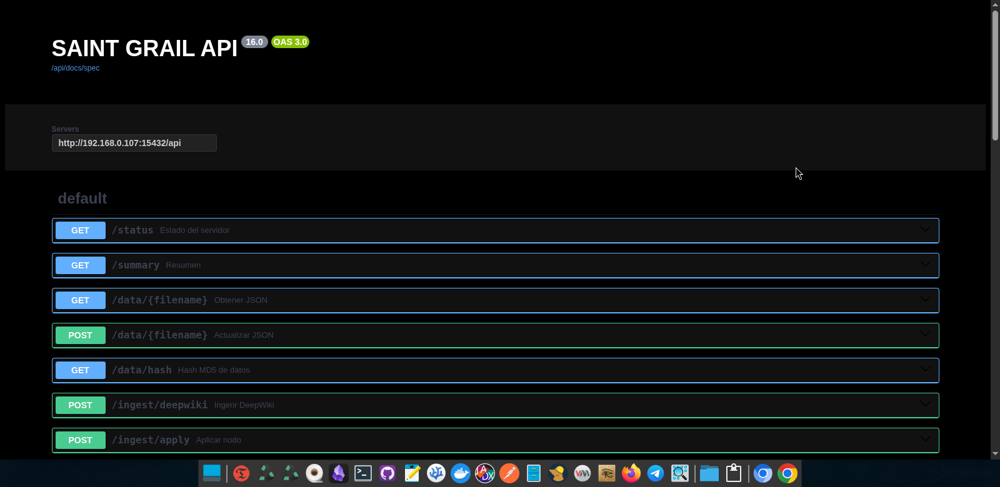
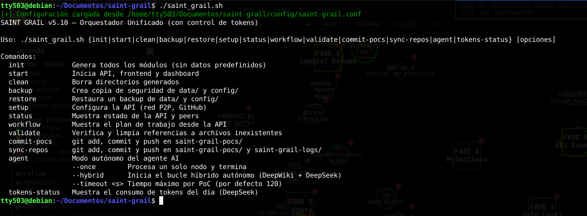
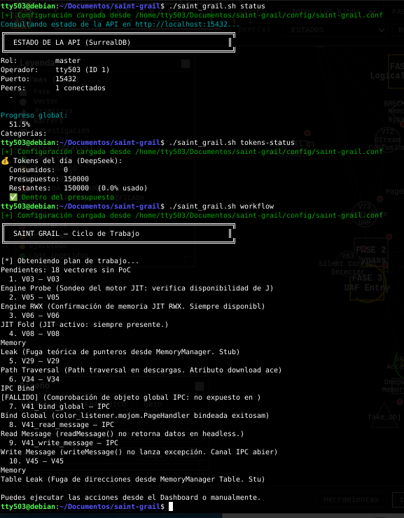
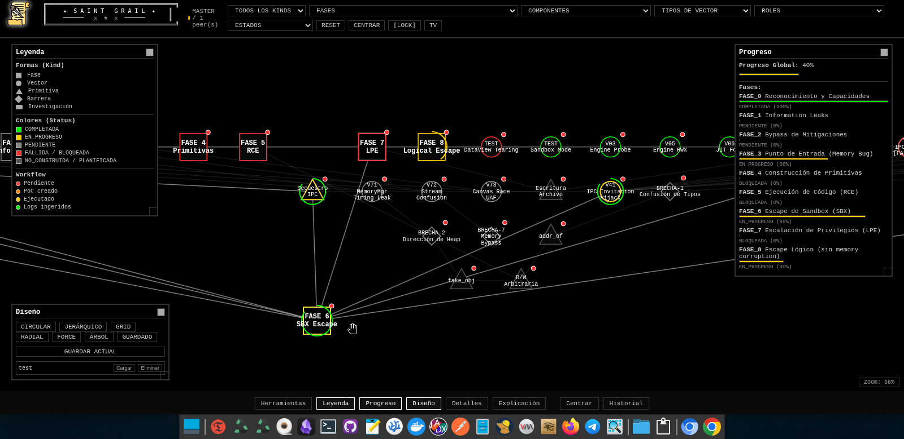
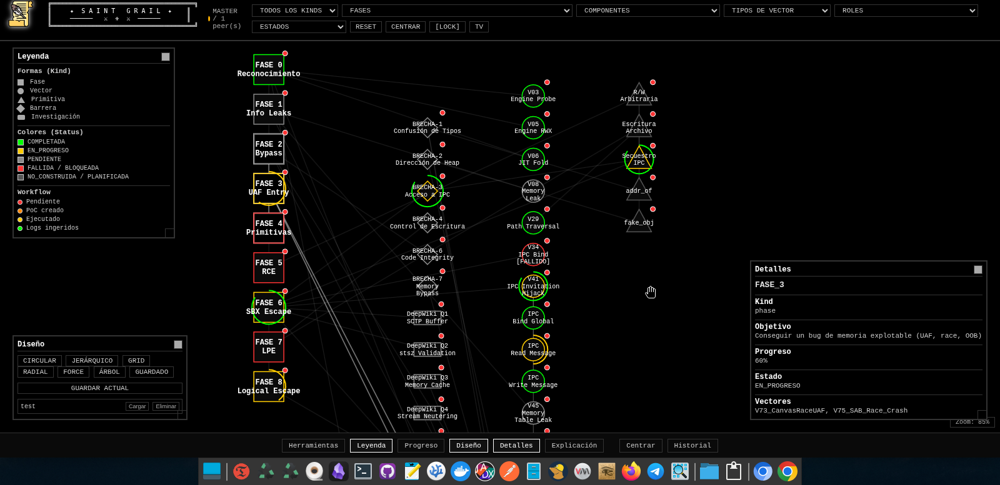
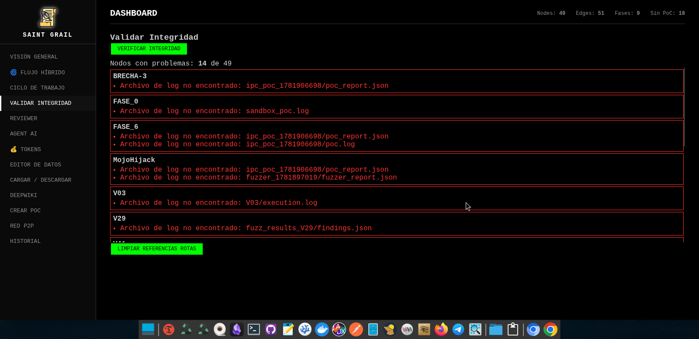

SAINT GRAIL: Una Plataforma Modular para Investigación de Seguridad Ofensiva con IA
Construí un sistema que integra APIs de modelos de lenguaje, investigación asistida por DeepWiki y un grafo interactivo para documentar y ejecutar hallazgos de vulnerabilidades. Un vistazo al estado actual, la arquitectura y hacia dónde voy.
/índice +
00. Motivación: El Bug Hunting No Es un Sprint
Durante años, colegas y amigos me han sugerido que me meta de lleno al bug hunting. "Con lo que sabes, deberías estar reportando CVEs todas las semanas", me dicen. Y sí, la idea es tentadora. Pero cualquiera que haya intentado vivir de esto sabe que los años de investigación no siempre se traducen en ingresos mensuales estables. Entre la fuga de cerebros hacia las FAANG, la competencia feroz y el hecho de que un solo bug puede llevarte semanas de trabajo sin garantía de recompensa... la ecuación no es sencilla.
Sin embargo, la inquietud por explorar vulnerabilidades nunca desapareció. Lo que necesitaba era un sistema que multiplicara mi capacidad de investigación. Algo que me permitiera documentar cada paso, visualizar las relaciones entre componentes y, sobre todo, integrar inteligencia artificial para acelerar el proceso. Así nació SAINT GRAIL.
Todas las capturas de pantalla y datos mostrados en este artículo son de prueba. Utilicé un conjunto de datos genérico (un programa ficticio llamado "GenericApp") para no exponer mi investigación real. La plataforma es completamente funcional, pero los vectores, fases y primitivas que se ven aquí son placeholders.
01. ¿Qué es SAINT GRAIL?
SAINT GRAIL es una plataforma modular para documentar, visualizar y ejecutar investigaciones de seguridad ofensiva. Combina un backend API REST con base de datos SurrealDB embebida, un frontend de grafo interactivo (HTML5 Canvas + vanilla JS), un dashboard administrativo y utilidades de línea de comandos. Todo el código es editable directamente, sin dependencias de frameworks pesados.
El objetivo es simple: tener un "copiloto" de investigación que no reemplace al analista, sino que lo potencie. La plataforma te permite:
- Crear vectores de ataque a partir de hallazgos en proyectos open-source.
- Generar preguntas contextuales con DeepWiki para profundizar en componentes específicos.
- Clasificar respuestas con IA (DeepSeek en mis pruebas) y crear automáticamente primitivas explotables.
- Ejecutar PoCs y registrar resultados en un ciclo de mejora continua.
- Visualizar todo el progreso en un grafo interactivo que muestra fases, vectores, brechas y primitivas.
El sistema aún no está lo suficientemente maduro para liberarlo como open-source. Hay piezas que necesitan pulirse, documentación que completar y pruebas de estrés que realizar. Pero estoy compartiendo los avances porque creo que la comunidad puede beneficiarse de las ideas, incluso si el código no está listo para consumo masivo.
02. Arquitectura y Componentes
La plataforma sigue los principios KISS (Keep It Simple, Stupid) y filosofía Unix: cada módulo tiene una responsabilidad única y se comunica mediante APIs bien definidas.
2.1 Estructura del Proyecto

2.2 Backend y Base de Datos
La API está construida con Flask y utiliza SurrealDB en modo embebido. Esto significa que no necesitas instalar un servidor de base de datos externo; todo se almacena en un archivo local. La taxonomía de nodos incluye:
| Kind | Forma en el grafo | Descripción |
|---|---|---|
| phase | Cuadrado | Fases de la cadena de ataque |
| vector | Círculo | Vectores de ataque específicos |
| primitive | Triángulo | Primitivas explotables (addr_of, fake_obj, etc.) |
| barrier | Rombo | Brechas o bloqueantes |
| research | Rectángulo | Preguntas DeepWiki o referencias externas |
La API expone endpoints para CRUD de datos, ingesta de hallazgos desde DeepWiki, creación y ejecución de PoCs, sincronización P2P entre instancias, y todo el ciclo de trabajo del agente híbrido.

2.3 Orquestador y Línea de Comandos
Todo se controla desde un script Bash llamado saint_grail.sh que actúa como orquestador. Desde aquí puedo iniciar los servicios, ver el estado, ejecutar el agente y monitorear el presupuesto de tokens de DeepSeek.


03. El Agente Híbrido y DeepWiki
Una de las características más potentes es el agente híbrido de investigación. La idea es crear un ciclo donde la IA y el analista humano se complementan:
- Selección automática: el bucle toma el primer vector activo que no esté en un estado final.
- Generación de preguntas DeepWiki: usando el módulo deepwiki.py, se crean preguntas contextuales en español basadas en el componente, archivos de auditoría y tipo de vector. Por ejemplo: "En el canal IPC, ¿se validan los tamaños de los mensajes antes de asignar buffers? ¿Es posible enviar un mensaje manipulado que provoque una corrupción de memoria?"
- Intervención humana: el nodo se pausa en estado AWAITING_DEEPWIKI y las preguntas aparecen en el dashboard. El analista investiga y responde.
- Clasificación y acción: el endpoint /api/agent/deepwiki/answer clasifica el riesgo usando DeepSeek (o mediante palabras clave si el presupuesto de tokens está agotado). Si el riesgo es alto, se crea automáticamente un nuevo nodo primitive, se genera un PoC y se ejecuta.
Utilicé DeepSeek (modelo gratuito con límite diario de tokens) para todas las pruebas de integración. La plataforma está diseñada para ser agnóstica al proveedor: puedes configurar cualquier API compatible con OpenAI en saint-grail.conf.

04. Dashboard y Flujo de Trabajo
El dashboard es el centro de mando. Desde aquí gestiono todo el ciclo de investigación, desde la creación de vectores hasta la validación de integridad.
4.1 Visión General y Progreso
La pantalla principal muestra el progreso global del proyecto, con fases que van desde "Reconocimiento" hasta "Escape Lógico". Cada fase tiene sus vectores y primitivas asociados.

4.2 Grafo Interactivo
El frontend del grafo es una de las partes que más tiempo me llevó. Renderiza los nodos según su kind (cuadrados para fases, círculos para vectores, triángulos para primitivas, rombos para barreras) y colorea según el estado. El panel de detalles muestra información exhaustiva: auditoría, PoC, logs, preguntas DeepWiki respondidas, etc.

4.3 Editor de Datos y Carga de JSON
Para crear vectores rápidamente, hay un formulario que te permite definir ID, componente, tipo de vector y descripción. También se pueden cargar y descargar datasets completos en formato JSON.


4.4 Validación de Integridad
Con el tiempo, los nodos pueden acumular referencias a archivos de log o commits que ya no existen. El panel de validación escanea y limpia estas referencias rotas, manteniendo la base de datos consistente.

05. Estado Actual y Próximos Pasos
SAINT GRAIL ya es funcional en mi entorno de desarrollo. El agente híbrido genera preguntas, el dashboard permite responderlas, se crean primitivas automáticamente y los PoCs se ejecutan. Pero aún no está listo para producción ni para un repositorio público.
Las tareas pendientes incluyen:
- Completar la ejecución real de PoCs (ahora es simulada en muchos endpoints).
- Migrar de los scripts generadores Bash (gen_*.sh) a una estructura de proyecto estable, aunque los generadores han sido increíblemente útiles para prototipado rápido.
- Mejorar la UI/UX del dashboard para hacer el flujo de investigación más intuitivo.
- Añadir tests automatizados para el ciclo completo del agente híbrido.
- Explorar integraciones con otros modelos de IA más allá de DeepSeek.
Cuando considere que el código está en un estado digno de ser compartido. No me gusta liberar proyectos a medias. Mientras tanto, este artículo y las futuras actualizaciones en el blog serán el canal para compartir avances.
Lo que más me entusiasma es el potencial de DeepWiki como fuente de contexto. La capacidad de generar preguntas específicas sobre archivos de código fuente, commits y componentes abre una puerta a una investigación semi-automatizada que no había visto en otras herramientas. No se trata de reemplazar al analista, sino de darle superpoderes.
/¿Te interesa la investigación de seguridad y la integración con IA?
Este proyecto se alinea con otras áreas de mi portafolio: exploit development, reversing y automatización de análisis.
07. Referencias y Enlaces
- DeepSeek API — Modelo de lenguaje utilizado en las pruebas.
- SurrealDB — Base de datos multimodelo embebida.
- Flask — Microframework web para Python.
- MITRE ATT&CK — Framework de tácticas y técnicas utilizado en la taxonomía de nodos.